MATHS :: Lecture 23 :: Vectoralgebra

Vector Algebra
A quantity having both magnitude and direction is called a vector.
Example: velocity, acceleration, momentum, force, weight etc.
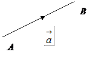
Vectors are represented by directed line segments such that the length of the line segment is the magnitude of the vector and the direction of arrow marked at one end denotes the direction of the vector.
A vector denoted by = 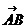 is determined by two points A, B such that the magnitude of the vector is the length of the line segment AB and its direction is that from A to B. The point A is called initial point of the vector and B is called the terminal point. Vectors are generally denoted by 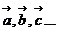(read as vector a, vector b, vector c,…)
Scalar
A quantity having only magnitude is called a scalar.
Example: mass, volume, distance etc.
Addition of vectors
If and 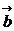 are two vectors, then the addition of  from
from  is denoted by
is denoted by  +
+ 
This is known as the triangle law of addition of vectors which states that, if two vectors are represented in magnitude and direction by the two sides of a triangle taken in the same order, then their sum is represented by the third side taken in the reverse order.
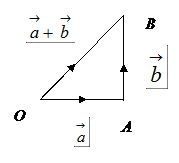
Subtraction of Vectors
If and are two vectors, then the subtraction of from is defined as the vector sum of  and - and is denoted by -
and - and is denoted by - 
 -
-  = +(-
= +(-  )
)
Types of Vectors
Zero or Null or a Void Vector
A vector whose initial and terminal points are coincident is called zero or null or a void vector. The zero vector is denoted by 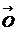.
Proper vectors
Vectors other than the null vector are called proper vectors.
Unit Vector
A vector whose modulus is unity, is called a unit vector.
The unit vector in the direction of is denoted by . Thus 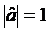.
There are three important unit vectors, which are commonly used, and these are the vectors in the direction of the x, y and z-axes. The unit vector in the direction of the x-axis is, the unit vector in the direction of the y-axis is and the unit vector in the direction of the z-axis is .
Collinear or Parallel vectors
Vectors are said to be collinear or parallel if they have the same line of action or have the lines of action parallel to one another.
Coplanar vectors
Vectors are said to be coplanar if they are parallel to the same plane or they lie in the same plane.
Product of Two Vectors
There are two types of products defined between two vectors.
They are (i) Scalar product or dot product
(ii) Vector product or cross product.
Scalar Product (Dot Product)
The scalar product of two vectors  and
and  is defined as the number, where
is defined as the number, where  is the angle between
is the angle between  and
and  . It is denoted by
. It is denoted by .
. .
.
Properties
- Two non-zero vectors
 and
and  are perpendicular if
are perpendicular if
\  .
. = 0
= 0
- Let be three unit vectors along three mutually perpendicular directions. Then by definition of dot product, and
- If m is any scalar, 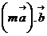=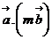=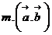
- Scalar product of two vectors in terms of components
Let : .
Then
= + +
= a1b1 + a2b2 + a3b3  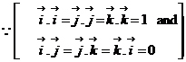
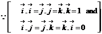

- Angle between the two vectors
 . =
. =
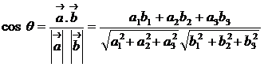
Work done by a force:
Work is measured as the product of the force and the displacement of its point of application in the direction of the force.
Let represent a force and the displacement of its point of application and  is angle between and.
is angle between and.
. = 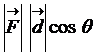
Vector Product (Cross Product)
The vector product of two vectors  and
and  is defined as a vector sin , where
is defined as a vector sin , where  is the angle from and , is the unit vector perpendicular to such that form a right handed system. It is denoted by . (Read: )
is the angle from and , is the unit vector perpendicular to such that form a right handed system. It is denoted by . (Read: )
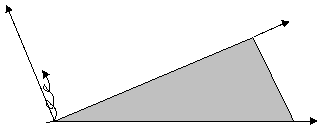
A

B
Properties
1. Vector product is not commutative
= 
2. Unit vector perpendicular to
………(i)
………(ii)
(i) ¸ (ii) gives =
3. If two non-zero vectors are collinear then
Note
If then (i)  =
= ,
, is any non-zero vector or
is any non-zero vector or
(ii)  =
= ,is any non-zero or
,is any non-zero or
(iii) and  are collinear or parallel.
are collinear or parallel.
4. Let be three unit vectors, along three mutually perpendicular directions. Then by definition of vector product 
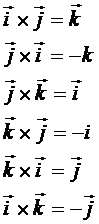
5. (m ) x
) x  = x (m) = m(
= x (m) = m( x
x  )where m is any scalar.
)where m is any scalar.
6. Geometrical Meaning of the vector product of the two vectors is the area of the parallelogram whose adjacent sides are and
Note
Area of triangle with adjacent sides =  x
x  )
)
7. Vector product in the form of a determinant
Let  =
=
Then =( ) x ()
= 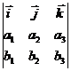
8. The angle between the vectors
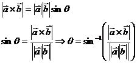
Moment of Force about a point
The moment of a force is the vector product of the displacement and the force 
(i.e) Moment
| Download this lecture as PDF here |